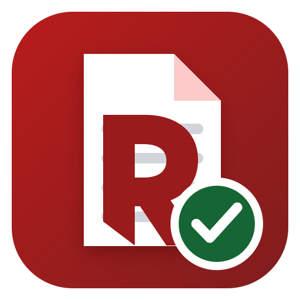

Manje ručnog rada. Više prostora za ono što je važno.
Ja sam Aleksandar Aleksić — IT menadžer i programer. Iz iskustva u reviziji i svakodnevnom radu razvijam Python i web alate koji skraćuju ponavljajuće postupke, obrađuju dokumente i podatke i ostavljaju rezultat koji korisnik može da pregleda.
Praktična rešenjaJasan tok radaKontrola rezultataRazvoj kroz upotrebu
01 / ODABRANI RADOVI
Alati sa konkretnim zadatkom.
Svaki projekat počinje stvarnom potrebom. Ovo je izbor rešenja iz mog rada.
IZDVOJENI PROJEKAT
ARPy.
Od dokumentacije do finalnog revizorskog izveštaja.
ARPy povezuje korake pripreme završnog revizorskog izveštaja u jedan vođen proces: rad sa Word dokumentima i PDF prilozima, provere kompleta i pripremu za štampu. Namenjen je da smanji ručno premeštanje i ponavljanje koraka, uz zadržavanje pregleda nad konačnim dokumentom.
Čarobnjak vodi kroz sastavljanje završnog PDF-a
Kontrole Word i PDF dokumentacije pre finalizacije
Analiza dnevnika knjiženja i izdvajanje stavki za ciljane testove glavne knjige.
Više o projektu +
Obuhvata testove salda konta, velikih i okruglih iznosa, knjiženja na praznike i neradne dane, završetaka 999 i praznih ili kratkih opisa. Nazive kolona i format datuma prilagođava ulaznoj Excel datoteci. Rezultati pomažu da se stavke za pregled brže pronađu i obrade.
Python · Excel
03Revizija · Desktop i web
TransferPy
Studija transfernih cena kao jedinstven radni predmet.
Radno okruženje za pripremu studija transfernih cena koje povezuje klijente, povezana lica, transakcije, izvore podataka i obračune. Podaci se vode kroz studiju od početnog unosa do stručnog pregleda i pripreme izlazne dokumentacije.
CUP i višestavčni CUP obračuni
TNMM, uporediva društva i višegodišnji podaci
Pozajmice, kamate i finansijski grafikoni
Word / PDF / Excel izvoz i arhive studije
Više o projektu +
CUP obračuni, uključujući višestavčni CUP, i TNMM analiza mogu se povezati sa višegodišnjim podacima i uporedivim društvima. Modul za pozajmice obrađuje kamate i prikazuje finansijske grafikone. Excel izvori, narativ i prilozi ostaju vezani za aktivnu studiju; korisničke uloge i istorija izmena olakšavaju pregled, a zaključavanje čuva arhivsku verziju podataka i dokumenata. Desktop izdanje podržava lokalni rad sa SQLite bazom i rezervnim kopijama.
Izbor metode, uporedivost i konačan zaključak potvrđuje stručnjak. Radni izvoz sam po sebi ne potvrđuje studiju.
Jednostavan radni sto za često korišćene PDF i OCR postupke.
Više o projektu +
Spaja i razdvaja dokumente, rotira stranice, dodaje vodeni žig i numeraciju, izdvaja tekst i smanjuje veličinu PDF-a. OCR podržava engleski i srpski tekst, latinicu i ćirilicu, uz mogućnost prekida duže obrade.
Python · Tesseract · PDF
05Revizija
MUS-Automation
Automatizacija revizorskog uzorkovanja
Automatizacija ponavljajućih koraka u MUS uzorkovanju u IDEA okruženju.
Više o projektu +
Podržava grupnu obradu, pregled uvezenih podataka, preskakanje praznih stavki i jasan status rada. Time se priprema uzorka lakše ponavlja i proverava pre nastavka rada u IDEA-i.
Python · IDEA
06Dokumenti

RepRedPy
Od izveštaja do upotrebljivih podataka
PDF izveštaji pretvoreni u strukturisane podatke za Excel i dalju kontrolu.
Više o projektu +
Prepoznaje i obrađuje više formata računovodstvenih izveštaja, a rezultat priprema za proveru i poređenje u Excel-u. Obrada se prilagođava strukturi izvora, uz posebne profile za uočene formate dokumenata.
Python · PDF · Excel
07Razvoj
GitDeskPy
Git kroz desktop interfejs
Grafičko okruženje za svakodnevni Git rad na Windows-u.
Više o projektu +
Pored commit-a, grana, stage/unstage i pregleda razlika, nudi blame, pretragu commit-a i sadržaja, cherry-pick, interaktivni rebase, worktree i alat za rešavanje konflikata. Fajlove je moguće otvoriti direktno u PyCharm-u.
Python · PyQt6 · Git
JOŠ IZ RADIONICE
Mali alati. Važni svakodnevni poslovi.
BatchPrintPyGrupna štampa PDF obrazaca, uključujući dvostranu štampu.
PrihodiMatchPyPovezuje kupca i opis iz PDF-a sa Excel podacima po iznosu.
MHE-EvidencijaEvidencija angažovanja radnika, perioda rada i izvoza u Excel/PDF.
SetupPyPaketiranje aplikacija i podrška instalaciji, deinstalaciji i pokretanju.
WorkPy U razvojuAplikacija sa lokalnim SQLite i serverskim MySQL izdanjem.
02 / NAČIN RADA
Od stvarnog procesa do alata koji pomaže.
Tehnologija je najkorisnija kada se uklopi u način na koji ljudi već rade — i kada rezultat mogu da pregledaju.
01
Razumem postupak
Najpre utvrdim šta ulazi u proces, koji su izuzeci i kakav rezultat korisniku zaista treba.
02
Uređujem tok rada
Korake povezujem u pregledan niz, sa jasnim izborima, kontrolama i izlaznim dokumentima.
03
Unapređujem kroz upotrebu
Povratne informacije iz svakodnevnog rada pretvaram u konkretne dorade i stabilniji alat.
03 / O MENI
Iskustvo iz posla. Rešenja kroz kod.
Više od 25 godina rada u IT-u i revizorskom okruženju oblikovalo je moj pristup razvoju softvera.
Najviše me zanimaju poslovi koji se ponavljaju: priprema dokumenata, provera podataka i koraci koji oduzimaju vreme. Od njih pravim alate sa jasnim ulazom, preglednim tokom rada i rezultatom koji korisnik može da proveri.
Aplikacije razvijam i unapređujem kroz praktičnu upotrebu i povratne informacije kolega.
 ARPy.
ARPy.